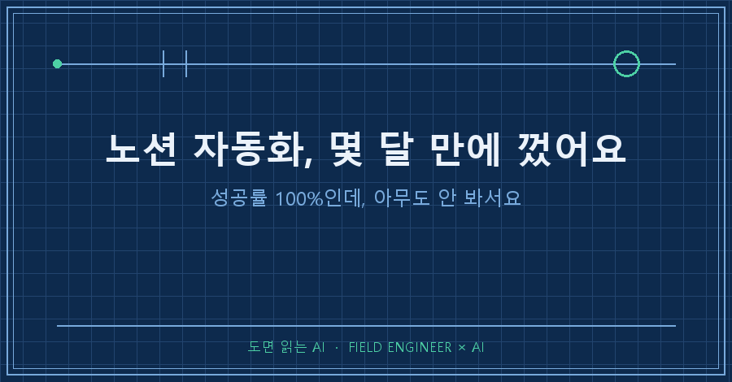
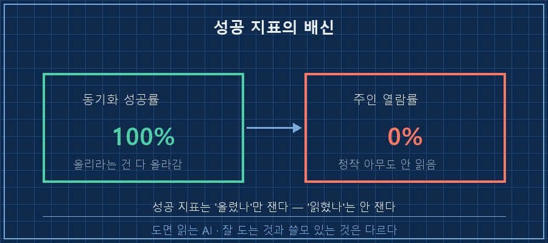
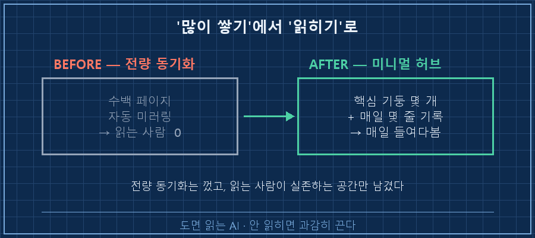
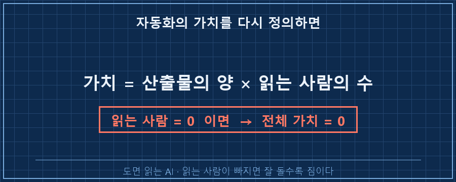

먼저 결론부터 말씀드릴게요.
잘 돌아가는 자동화라고 해서 다 살려둘 이유는 없더라고요.
저는 몇 달 동안 성공률 100%로 멀쩡히 돌던 노션 자동화를 얼마 전에 통째로 꺼버렸습니다.
이유가 좀 어이없어요. 잘 돌긴 하는데, 정작 그걸 만든 저조차 안 읽고 있었거든요.
제 본업은 수소 설비 제어예요 — 판넬 설계, PLC 로직, 현장 커미셔닝.
AI는 그 일을 굴리는 도구로 몇 년째 쓰고 있고요.
이번 이야기는 제가 만든 자동화 하나를 스스로 손절한 기록이에요.
1. 잘 돌아갔어요. 근데 아무도 안 봤어요
한동안 저는 업무 문서가 만들어질 때마다 노션에 자동으로 올라가게 해뒀어요.
보고서 쓰면 올라가고,
발표자료 만들면 올라가고,
분석 결과 정리하면 또 올라가고..
사람 손 하나 안 대도 수백 장이 차곡차곡 쌓였죠.
처음엔 뿌듯했어요. "이야, 내 지식 창고가 알아서 채워지네" 싶었거든요.
근데 어느 날 문득 이런 생각이 들더라고요.
'이거 내가 마지막으로 열어본 게 언제였지?'
세어보니 답이 나왔어요.
쌓인 페이지는 수백 장, 그중에 제가 다시 열어본 건 거의 없었어요.
남 주려고 만든 것도 아니고 저 보려고 채운 창곤데, 정작 주인이 안 들어가는 창고였던 거죠.
2. 성공률 100%가 오히려 함정이었어요
여기서 좀 무서운 걸 하나 깨달았어요.
이 자동화, 지표상으로는 완벽했거든요.
[노션 자동화 상태 — 몇 달 운영 후]
동기화 성공률 : 100% ← 올리라는 문서는 전부 올라감
주인 열람률 : 0% ← 정작 다시 열어본 페이지 거의 없음
쌓인 페이지 : 수백 장에러도 거의 없고, 올리라는 건 다 올라갔어요.
숫자만 보면 "아주 잘 돌고 있는 시스템"이었죠.
근데 그 숫자가 저를 속이고 있었어요.
성공률은 '올리는 데 성공했나'만 재요.
'그게 쓸모가 있었나'는 아무도 안 재고 있었거든요.
그래서 성공 로그만 믿으면, 아무도 안 보는 창고를 완벽하게 채우면서 잘하고 있다고 착각하게 돼요.
제조 현장으로 치면 이래요.
생산 라인 속도를 열 배로 올려놨는데, 검사는 여전히 사람이 눈으로 하나씩 보는 구조.
그러면 라인은 쌩쌩 도는데 검사대 앞에 재고만 산더미로 쌓이죠.
저한테는 노션이 그 검사대였어요.
AI가 문서를 뽑아내는 속도를, 그걸 읽는 제 눈이 도저히 못 따라간 거예요.

3. 그래서 그냥 껐습니다
보통 이런 상황에서 사람 마음은 "더 잘 정리하면 읽겠지"로 가요.
폴더 더 나누고, 태그 더 달고, 대시보드 더 예쁘게..
근데 그건 안 읽는 창고를 더 크게 짓는 일이더라고요.
그래서 반대로 갔어요.
전량 동기화를 그냥 껐습니다. 스케줄러 내리고, 관련 규칙도 싹 정리했어요.
대신 딱 하나만 남겼어요.
제가 진짜 매일 들여다보는 핵심 몇 개.. 그것만 모은 미니멀 허브 하나로 재출발했어요.
수백 장을 전부 밀어 올리는 대신, 오늘 뭐가 돌아가는지 몇 줄만 적히는 공간이요.
[전량 동기화] → 껐음
수백 페이지 자동 미러링, 열람률 0
[미니멀 허브] → 살림
핵심 기둥 몇 개 + 매일 몇 줄 기록
= 읽는 사람(나)이 실제로 존재하는 공간만 남김
4. 자동화의 가치 = 산출물 × 읽는 사람
이 일로 자동화를 판단하는 기준 하나가 바뀌었어요.
예전엔 "이게 잘 도는가"만 봤어요.
지금은 "이걸 읽는 사람이 있는가"를 같이 봅니다.
곱셈이라고 생각하면 편해요.
아무리 좋은 산출물을 많이 뽑아도, 읽는 사람이 0이면 곱한 값도 0이에요.
읽는 사람이 빠진 자동화는, 잘 돌수록 오히려 관리비만 먹는 짐이 되고요.

| 볼 것 | 예전의 나 | 지금의 나 |
|---|---|---|
| 판단 기준 | 잘 돌아가는가 | 읽는 사람이 있는가 |
| 성공의 정의 | 동기화 성공률 | 실제 열람·활용 |
| 많이 쌓이면 | 뿌듯 | 관리비부터 걱정 |
| 안 읽히면 | 그냥 켜둠 | 과감히 끔 |
자주 묻는 질문
Q. 애써 만든 자동화를 끄는 게 아깝지 않았어요?
아까웠죠. 근데 안 읽는 창고를 유지하는 비용이 더 아깝더라고요. 그리고 완전히 버린 게 아니라, 껐다가 진짜 필요한 핵심만 다시 살린 거예요. 실패한 설계도 다음 설계의 데이터가 되니까, 이 자동화도 헛수고는 아니었어요.
Q. 그럼 자동화를 아예 줄이라는 얘기인가요?
그건 아니에요. 만드는 걸 줄이자는 게 아니라, 사람이 못 따라갈 만큼 쏟아지면 '읽는 표면'을 줄이자는 거예요. 전부 다 볼 수 없으면 핵심만 샘플로 보고, 문제 생긴 것만 눈에 띄게 하는 구조요. 생산 쪽이 아니라 검토 쪽을 손보는 거죠.
정리하면요
AI로 자동화를 돌리기 시작하면, 어느 순간 만드는 속도가 읽는 속도를 앞질러요.
그때부터는 '잘 도는 자동화'가 곧 '좋은 자동화'가 아니에요.
잘 돌수록 아무도 안 보는 걸 더 부지런히 쌓을 수도 있거든요.
- ☐ 내가 만든 자동화, 그 결과물을 최근에 다시 열어본 적 있는가
- ☐ '성공률' 같은 지표가 '쓸모'까지 재준다고 착각하고 있진 않은가
- ☐ 안 읽히는데 잘 돈다는 이유로 그냥 켜두고 있진 않은가
하나라도 뜨끔했다면, 한 번쯤 과감히 꺼보시는 것도 방법이에요.
저는 이렇게 잘 돌지만 꺼버린 자동화들의 기록을 makefield.ai에 남기고 있어요.
그래도 공장은, 계속 만들어지고 있고요.
---
태그: #노션자동화 #노션자동화후기 #AI업무자동화 #자동화정리 #세컨드브레인 #노션활용 #AI문서자동화 #빌드과잉 #자동화관리 #AI실무 #현장엔지니어 #제조업AI #AI활용법 #엔지니어AI #도면읽는AI